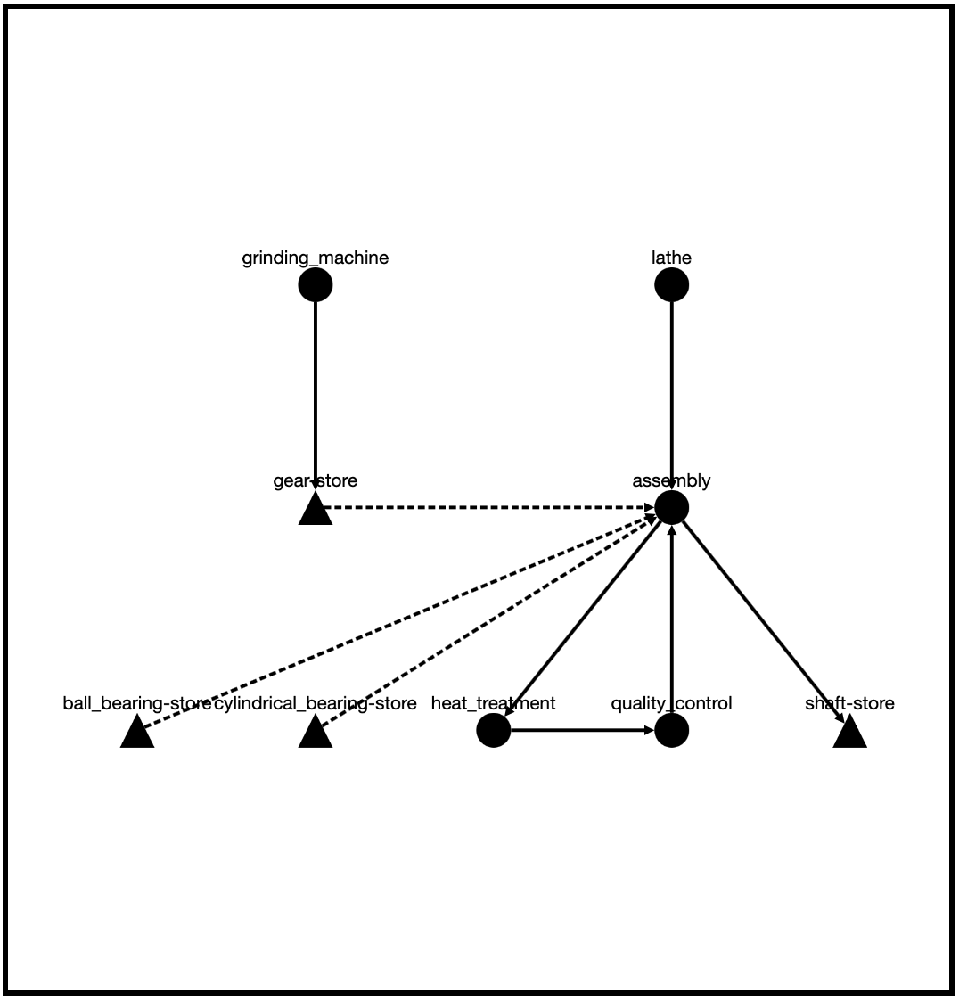

Example 02: Inspect and visualize input data¶
This example shows how the input files defined in example 1 can be inspected for errors and also how the modeled process can be visualized on a layout level. These steps should always be performed when a new data set has been defined, because the goal of these steps is to check whether all data has been set correctly and the process has also been mapped as you imagined it.
Inspect¶
The aim of the insect function, which can be called on the simulation environment, is to find errors in the defined data that the user has made when entering the data.
Since the inspector does not use the raw data, but the already modified data, it can happen that, depending on the severity of the error, the program flow is already terminated by exceptions when the simulation environment is created (during which the data is also transferred into the internal format). One of these errors is for example when functions, items or stations are used that are not defined in the files.
However, there are also errors that do not lead to exceptions when converting to the internal data format, such as a defined function not being a generator function at all or not receiving the correct set of parameters. So that those errors do not lead to an exception in the simulation (after possible long runtimes), such ‘soft’ errors are identified by the inspector.
The following code shows how to call the inspector.
import Environment
if __name__ == '__main__':
# create new simulation environment
env: Environment = Environment()
# read the input files
env.read_files('../data/process_data.json', '../data/functions.py')
# inspect the simulation environment
env.inspect()
After the Inspector is launched, process bars appear in the console indicating the progress (the process takes a few seconds).
After the process is completed, the console displays an overview of the number of errors. A distinction is made between warnings and exceptions.
For demonstration purposes, the following errors are intentionally introduced into the raw data.
Incorrect parameter name of a process function
def turning(environment, item, machine, factory): ...
Brackets around the demand for a pure edit for the item ‘shaft’
... "demand": [[1],[3],10,2,[1,2]], "component": [[],["gear"],[],[],["ball_bearing","cylindrical_bearing"]], ...
The output in this case would look like this:
progress station: [====================] 100% quality_control
progress item: [====================] 100% cylindrical_bearing
factory: [====================] 100% factory
WARNINGS-------------------
Traceback (most recent call last):
File "prodsim/inspector.py", line 574, in __inspect_item
warnings.warn("The signature of a process function should be (env, item, station, factory),"
exception.BadSignature: The signature of a process function should be (env, item, station, factory), but in the
function 'turning' at least one argument has a different name.
EXCEPTIONS-----------------
Traceback (most recent call last):
File "prodsim/prodsim/inspector.py", line 470, in __inspect_item
raise exception.InvalidValue("The component list of the item at position {pos} in the "
exception.InvalidValue: The component list of the item at position 1 in the passed file implies that in the process
step 1 is a machining process takes place, but the demand list implies an assembly.
---------------------------
Number of Warnings: 1
Number of Exceptions: 1
---------------------------
You can see that the introduced errors led to a warning and an exception, which did not terminate the program, but were caught and displayed in order at the end. In the last lines of each error message you will find useful hints how to fix most of the errors.
Warnings indicate errors that would not cause the simulation to abort, but which violate good assumptions. Thus, each warning should also be corrected before the data is used for further purposes.
Visualize¶
After the inspector has checked that the input data is correct, the next step is to display the logistic part of the model as a interactive network graph to find structural errors in the modeling.
The following code shows how to call the inspector.
import Environment
if __name__ == '__main__':
# create new simulation environment
env: Environment = Environment()
# read the input files
env.read_files('../data/process_data.json', '../data/functions.py')
# visualize the simulation environment
env.visualize()
A local development app is started on a flask server when the method is called. The corresponding link to it is displayed in the command line or output window.
For the process described above, the graph is as follows. In order not to lose the overview even with large graphs, you can zoom in the plot, move the graph and also move individual nodes, if the calculated position is not optimal.
{kind=link}
It can be seen that each station defined by the user is represented by a node (circle). The set of nodes is completed by one node per workpiece (triangle), which represents the final memory where the workpieces are stored at the end of the process.
The flow of workpieces through the system is represented by directed cant between nodes. For example, the process for the gears starts at the grinding machine and ends at the final node ‘gear-store’. In addition, there are dashed lines, which always point from end nodes (triangle) to stations nodes (circle). These point to an assembly process and indicate which workpieces (from the end store) flow to an assembly process. For example, it can be seen that ‘gear’, ‘ball_bearing’ and ‘cylindrical_bearing’ are needed in the assembly station for assembly. Furthermore, the splice in the process chain of the item type ‘shaft’ can also be recognized.
In order not to lose the overview also with large strongly branched graph you can select in the app in a dropdown menu one of the defined item types, then the appropriate path of these workpieces (including the start and end node and all end stations of assembly objects) is marked red. In the following the item type ‘gear’ is selected.

In addition, there are two tables that display different contents depending on the selected data. If you select an item in the dropdown menu, then you get all the information belonging to the item displayed in the table. If you select not only an item, but also a node (by clicking on it in the graph), you will also get information about the node. This information can be differentiated into two groups. One is the information that is independent of an item (like, for example, the name of the node or the capacity) and the other is information that is dependent on the selected item. For example, the attribute ‘function’ or ‘demand’ of a node depends on the selected item.
Since the item ‘gear’ and the node ‘assembly’ have been selected in the picture above, no attributes ‘function’ or ‘demand’ are displayed in the table of the station, since workpieces of the type Gear are not processed at the station assembly.
However, if you select the item type ‘shaft’ next to the ‘assembly’ state (see picture below), then the items will indeed be processed on the selected node.

As you can see in the picture, you get more entries in the corresponding table. ‘function’ is a list, which shows all functions executed at this station on the selected item. It must be a list, because loops are allowed. In addition, there are other lines that represent the demand of this station. Since it is a station where an assembly is performed, there is not only one entry for ‘shaft’. Also here it concerns in each case lists, in order to be able to represent loops.
Note
It should be noted that in the case of a triple (or higher) number of loops, it is not possible to reconstruct the actual progression of the items through the process, since it is not possible to know in which order the loops are run through. Therefore, the raw data must always be kept in mind.